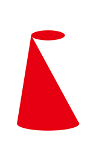
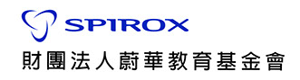

TED是什麼？
TED是一個致力於「分享ideas」的非營利組織，通常以18分鐘內強而有力的短講呈現。 TED組織設立「TEDx」計畫，幫助社群、個人或組織能夠舉辦各地大會，分享與連結ideas。 TEDxNTHU則透過TED官方授權，於2013年成立並加入TEDx行列，期望讓更多可貴的ideas能被匯聚、 看見、分享，更期望觀眾未來運用所得創造價值、回饋社會。
年會介紹 CORE
TEDxNTHU 2016年會以「core」為主題，「 釐清自己 」為主軸。透過釐清自己的角色與定位,讓我們找到自身的核心與價值。知道自己所處的立場與狀況,並透過更清晰的眼光看見所關心的事務；釐清自身真正想完成的目標與夢想，而更有效率地尋找真正所需的資源。期望未來在面對各式各樣的資訊及想法時，能以自我的核心與價值為出發點,做出最切合初心的選擇。
講者介紹
活動流程

活動地點
自行開車
- 由95A公道五匣道出高速公路後直行，經由引道接光復路後右轉直行，由本校光復路正門進入校園。
- 如果您錯過了上述交流道，請由下一個出口(95B竹科交流道)下高速公路，右轉接園區新安路後直行，由本校南門進入校園。
客運
西部幹線 新竹站下車
- 新竹客運公車號碼：1路(約每10-15分鐘一班)、2路(約1小時一班)
- 搭乘地點：民族路，SOGO百貨旁邊
- 下車地點︰清華大學站
台灣高鐵
- 請於高鐵新竹站下車，下車後可轉搭其他交通工具
- 國光客運接駁車182提供高鐵新竹站快捷專車免費接駁服務，每班車間隔約40分鐘一班 。
火車／公車
下交流道後之下車站（於交流道口或清華大學門口），請先洽詢各客運公司：
- 新竹三重客運聯營
- 國光客運
- 飛狗巴士
- 豪泰客運
- 統聯客運
策展團隊
贊助夥伴


